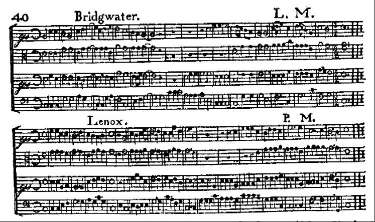
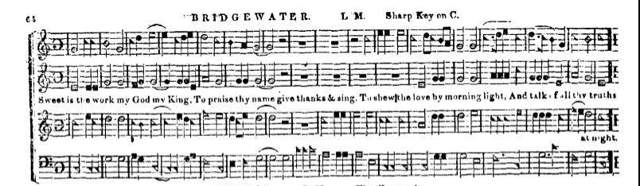
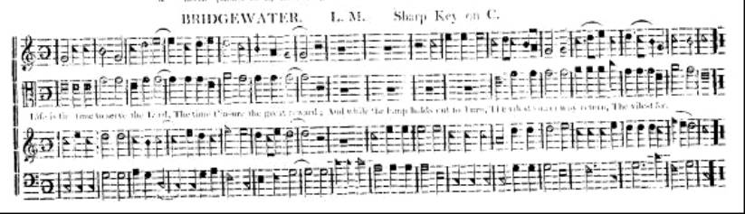
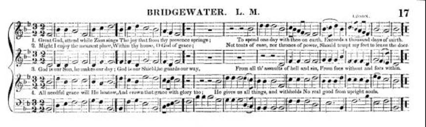
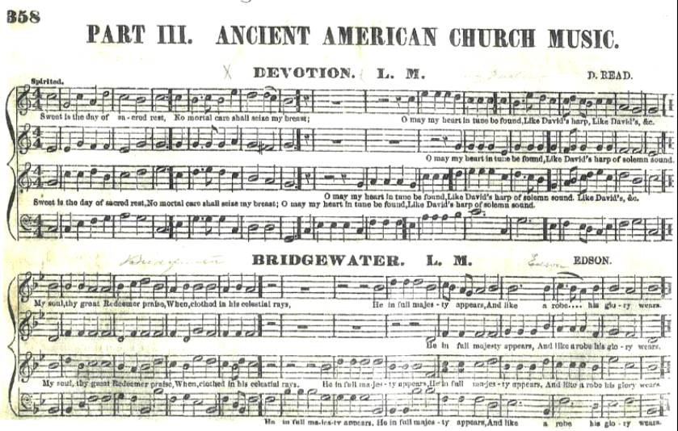
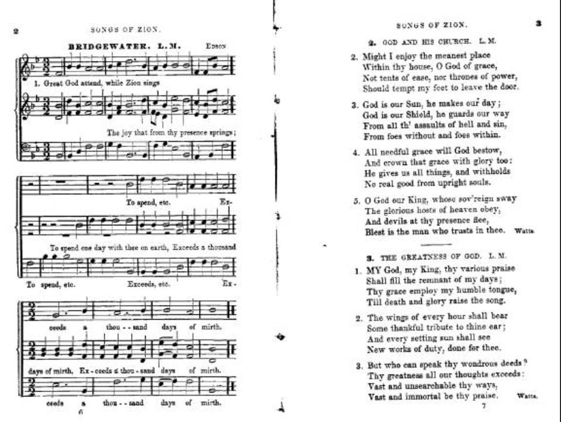
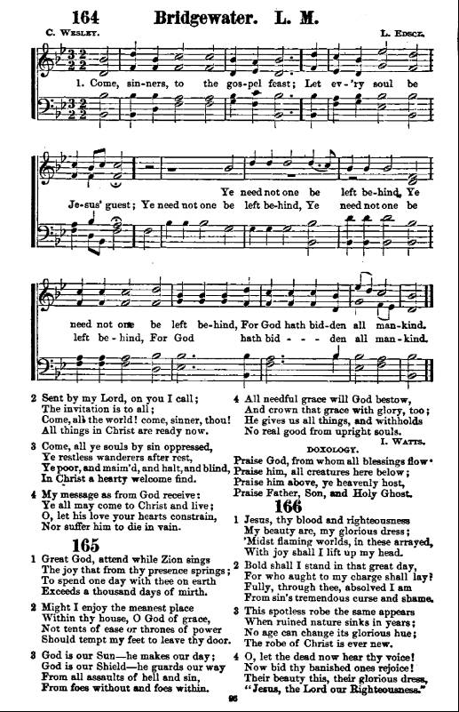

|
|
颂主新歌 |
|
nil |
1.颂扬天父真神，万古千秋主宰；
|
|
Praise Be To God On High
|
|
|
|
|

On What Has Now Been Sown (Edson - Lenox) https://youtu.be/TbNpl2dI2OU - 頌新009. 頌揚上主
https://youtu.be/Jt7kUERg85k
| Tune: | LENOX |
| Composer: | Lewis Edson |
Tune Information
| Title: | LENOX (Edson) |
| Composer: | Lewis Edson (1782) |
| Meter: | 6.6.6.6.8.8.8 |
| Incipit: | 11156 55123 21135 |
| Key: | A Major |
| Copyright: | Public Domain |
| Short Name: | Lewis Edson |
| Full Name: | Edson, Lewis, 1748-1820 |
| Birth Year: | 1748 |
| Death Year: | 1820 |
Lewis EdsonBorn in Massachusetts,he began working as a blacksmith and farmer. After marrying, he became a singing teacher, notable in his day. He taught singing in MA NY and CN, moving to NY in 1817. He was also an author. His 35 works consist of tunebooks, anthems, Psalm music, music scores and chants for choir use.
John Perry
Lewis Edson
Lewis Edson (22 January 1748 – 1820 in Woodstock, New York)[1] was one of the first American composers.[2] He began working as blacksmith, but soon after became a singing master and was a notable singer in his day. His most popular compositions were Bridgewater, Lenox and Green Field and were published in 1782 in the "Choristers Companion".
List of works[edit]
- Bridgewater – choral hymn[3]
- Lenox[4] – choral hymn[5] View Score at Hymnary.org
- Newton[6] – choral hymn
- Green Field – choral hymn
About “Bridgewater”, 276 (Lewis Edson Sr. (1748-1820)
from Lowens: page of Edson’s The Social Harmonist, 2nd edition, New York 1801:

The Easy Instructor, Little and Smith, 1816 edition (Albany), has it the same (words and time signature) as The Kentucky Harmony, next, except that the alto part is in alto clef.
from The Kentucky Harmony:, A. Davisson, 1816:

from Wyeth’s Repository, 1820 edition:

from The American Vocalist, D. H. Mansfield, Boston 1849:

from Sabbath Harmony, L. O. Emerson, Boston 1860:

from Song of Zion: A manual of the best and most popular hymns and tunes for social and private devotion, by W. W. Rand. American Tract Society, Boston, no date, but likely between 1851 (first printing in New York) and 1864 (“Enlarged” edition):

from The New Jubilee Harp; Or, Christian Hymns and Songs, Boston: Ozias Goodrich, 1883:
